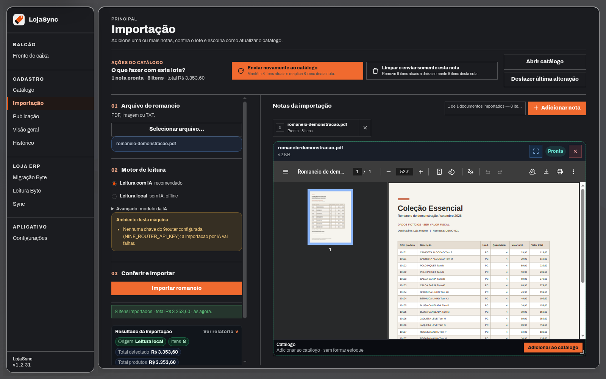
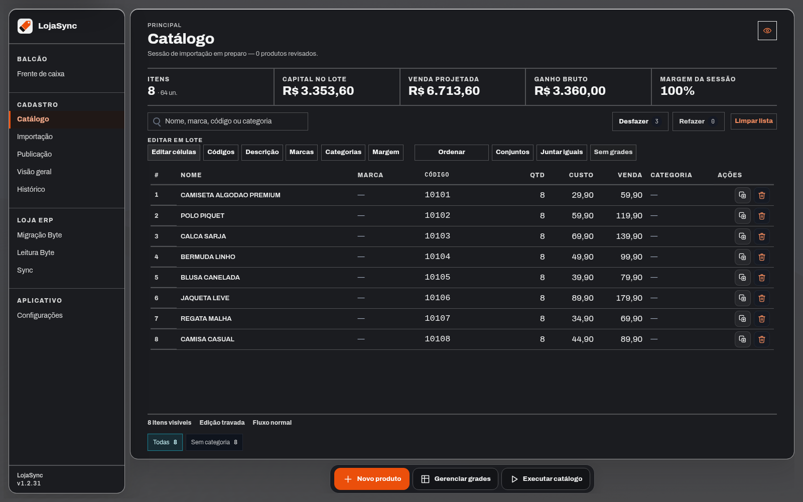
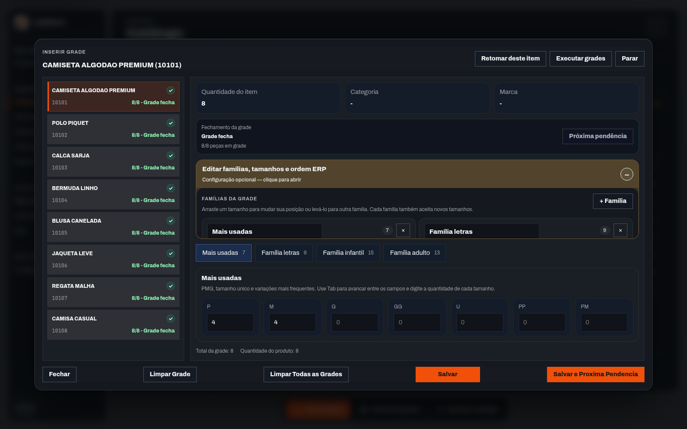
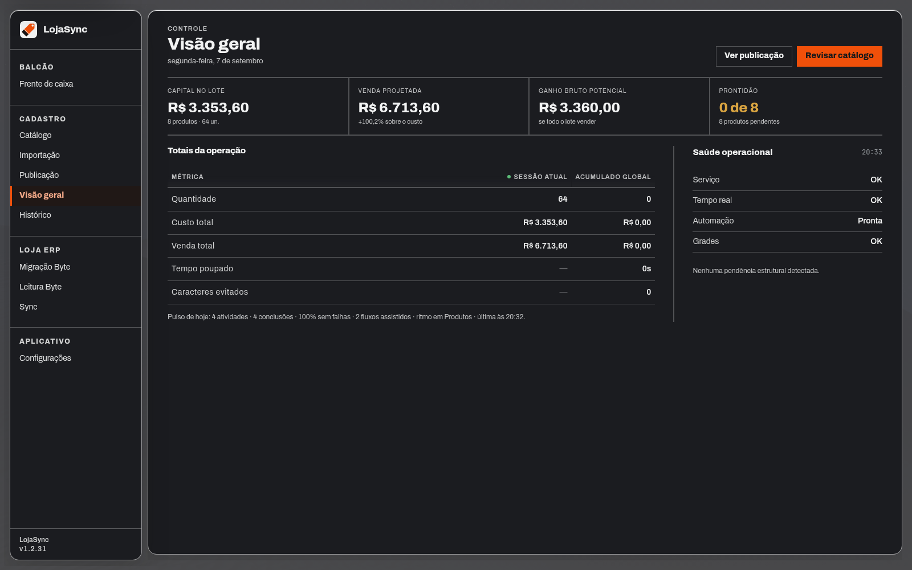
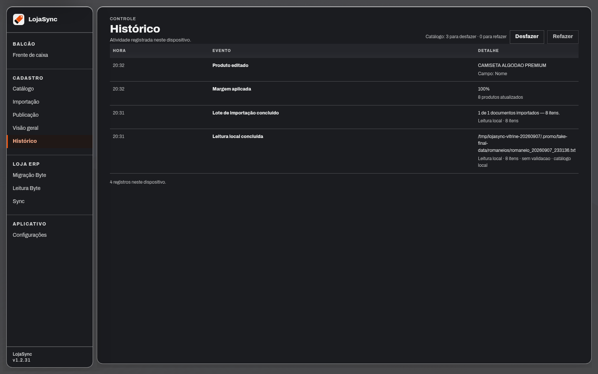
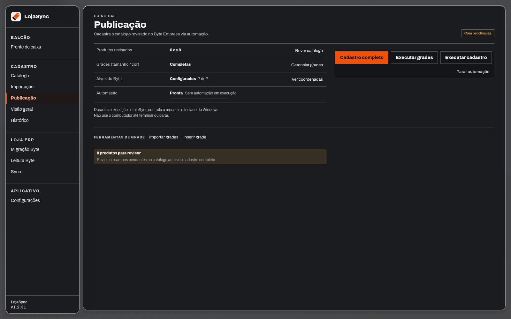

Do documento aos produtos
Leia um romaneio com IA ou leitura local. Confira os dados extraídos e ajuste o catálogo antes de cadastrar no Byte.
Preparação de produtos para o Byte Empresa
Importe, confira e organize os produtos da loja em um só lugar. Um catálogo local pronto para a próxima etapa do cadastro.
Leia um romaneio com IA ou leitura local. Confira os dados extraídos e ajuste o catálogo antes de cadastrar no Byte.
Revise códigos, custos e quantidades. Edite em lote e mantenha as famílias de tamanhos na ordem certa.
Veja os totais, consulte o histórico do dispositivo e prepare o cadastro no Byte Empresa com revisão humana.
Um fluxo, do começo ao cadastro
O LojaSync reúne a preparação do lote em etapas visíveis, sem perder o vínculo com o documento de origem.
Escolha o arquivo e o modo de leitura adequado ao documento.
Compare a nota, as quantidades e os valores detectados.
Ajuste produtos, valores, quantidades e famílias de tamanhos.
No Windows, confira os alvos e a calibração antes de automatizar no Byte.
Por dentro do LojaSync
Seis capturas do aplicativo em execução. Clique em uma tela para ver os detalhes.
01 / Importação
Mantenha o romaneio à vista e confira o resumo da leitura. Compare as quantidades e os totais detectados; depois, revise os produtos no catálogo.

02 / Catálogo
Códigos, descrições, custos e quantidades ficam à mão. Faça ajustes individuais ou em lote e confira os itens antes do cadastro.

03 / Grades
Organize as famílias de tamanhos usadas pela loja. Reordene a grade para manter uma sequência coerente na preparação dos produtos.

04 / Visão geral
Veja capital no lote, venda projetada e prontidão. Os indicadores ajudam a entender o que está preparado e o que ainda precisa de atenção.

05 / Histórico
Consulte os registros do dispositivo para acompanhar o trabalho no catálogo. As ações compatíveis também contam com desfazer e refazer.

06 / Cadastro no Byte Empresa
Confira os produtos, as grades, os alvos e o estado da automação. O cadastro no Byte Empresa acontece no Windows, com o ambiente preparado e calibrado.

Esta demonstração, em números
Contagens da bancada de demonstração. Os produtos e os valores são fictícios; as telas e o processamento são reais.
Registro em 07 de setembro de 2026 · Leitura local na gravação · Os números descrevem esta demo e não representam ganho de produtividade ou tempo de cadastro.
Escolha a leitura adequada
O tipo de documento e o ambiente definem a escolha. Você seleciona o modo de leitura; o aplicativo não troca de modo automaticamente em caso de falha.
Deslize a tabela para comparar os modos
| Na importação | Leitura local | Importação por IA |
|---|---|---|
| Como funciona | O leitor processa arquivos compatíveis no computador. | O serviço de IA configurado interpreta o documento. |
| O que exige | Texto extraível ou OCR compatível no Windows; layout reconhecido. | Conexão, provedor disponível e credencial configurada. |
| Conferência | Revisão do catálogo antes do cadastro no Byte. | Revisão do catálogo antes do cadastro no Byte. |
| Destino dos produtos | Catálogo local do LojaSync. | Catálogo local do LojaSync. |
| Nesta demonstração | Modo usado no romaneio fictício. | Disponível no produto; não usado na gravação. |
Comparação funcional conferida em 07/09/2026, com base na interface, no manual de operação e na release v1.2.29. Consultar fontes e escopo.
Instalação da equipe
O LojaSync é distribuído para a equipe com acesso autorizado ao projeto. A execução acontece no computador da operação.
Repositório privado · Acesso restrito à equipe
Windows, Byte Empresa aberto na tela correta e alvos calibrados. A importação por IA requer um provedor e uma credencial próprios. A revisão humana faz parte do fluxo.
Use Windows com Python 3.11 ou 3.12 e Node.js com npm. Obtenha o projeto pelo canal autorizado da equipe.
Repositório · acesso restritoExecute Iniciar LojaSync.bat. O launcher prepara as dependências e abre a janela do aplicativo. A preparação pode solicitar elevação no Windows.
Verifique os produtos, escolha o modo de importação e revise os resultados. Antes de cadastrar no Byte, confira o ambiente e a calibração.
O próximo lote merece
um bom começo.